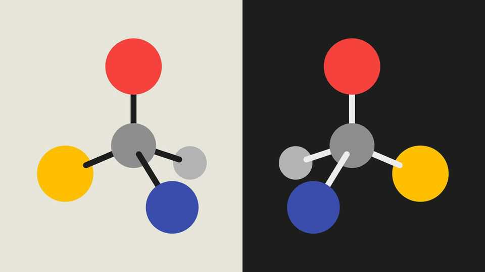
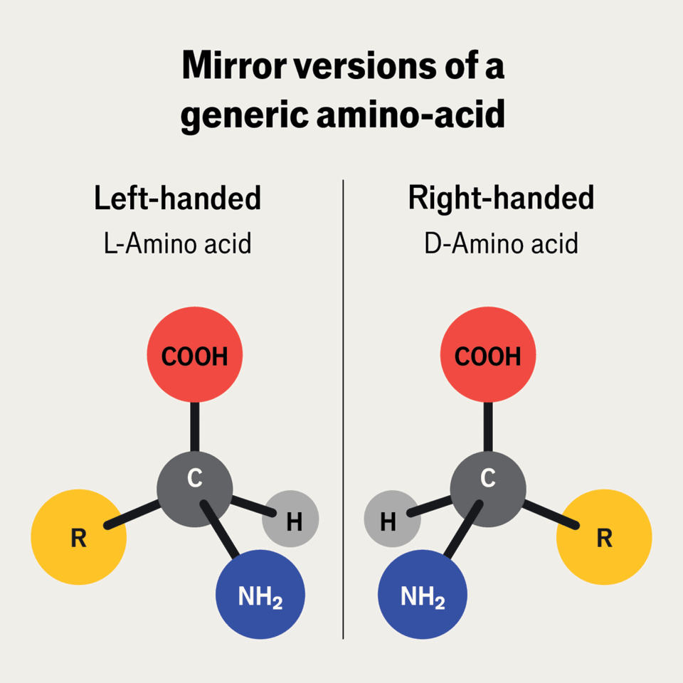

Mirror life is dangerous. Regulators must act before it becomes real
Playing catch-up with the technology is not an option

Oct 1st 2026
SYNTHETIC BIOLOGY is moving fast and artificial intelligence is turbocharging it. Soon scientists may be able to create whole cells from scratch. This could allow the AI-assisted exploration of completely unnatural biochemistries.
One such is mirror life. Many organic molecules come in two asymmetrical forms, like your hands. Amino acids and sugars can in theory take on both a left- and right-handed form which cannot be superimposed. In nature, organisms generally contain only one of those forms for each molecule. However, an artificial cell could have its molecules’ handedness reversed. That could shed light on reasons behind handedness. Perhaps the anti-molecules may turn out to be valuable as drugs, say.
Yet any potential benefits pale beside the threats. Immune systems may not recognise mirror bacteria, in the way that a glove will not fit the wrong hand. Mirror bacteria may therefore become wildly pathogenic. Because viruses and predatory amoebas that keep natural pathogens in check may be unable to control them, they could ravage ecosystems. If mirror life escaped from the lab, it would be impossible to recall.
Luckily, unlike many past technologies, there is still time to put controls in place. Governments and scientists must act now. Some biologists are already calling for pre-emptive measures. This has echoes of the Asilomar meeting of (mostly Western) biotechnologists 51 years ago that set voluntary safety guidelines for genetic engineering. But today’s practitioners recognise that would not be enough. Biotech is now vastly larger, more capable, more profitable and more international than it was then. China is a force.

The first necessity is for all countries capable of the research to agree not to fund it, and to ban public and private work leading in this direction—and to do both today, well before synthetic cells are possible. Next comes detecting and stopping mavericks who try to create mirror life furtively. This requires bolstering the system of monitoring and reporting fishy orders placed with biochemicals suppliers. Requests for opposite-handed molecules must be reported alongside the current screening for DNA sequences that might form parts of pathogens. Publicly available AI models should have guardrails to stop them being used for mirror biochemistry. Last, in case mirror life does ever escape containment, biosurveillance tests must be developed to pick out wrong-handed molecules in the wild and sound a warning.
Rational state actors, or even terrorists with earthly objectives, are unlikely to create mirror life deliberately as a weapon, because once it had been released it would be uncontrollable. Companies have even less reason to dabble in an outlawed market. And if some opposite-handed molecule had black-market value as a recreational drug, criminal enterprises have no interest in letting loose something that could wipe out their customers.
Irrational actors exist, as the Japanese found out when Aum Shinrikyo, a doomsday cult, tried to build bioweapons. But the more countermeasures are in place, the easier such psychopaths are to stop. No one can know where the advent of synthetic cells will lead. If humanity cannot deal in advance with a threat when everyone’s interests are aligned, it cannot hope to tackle the unknown unknowns of the future.■